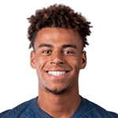
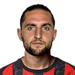

Vyhraje Francie MS 2026?
Francie na MS 2026 skončila v semifinále: 0:2 se Španělskem v Dallasu, první porážka po šesti výhrách. V sobotu 18. července ji čeká Anglie v zápase o třetí místo.

Semifinále a boj o bronz
Francie na MS 2026 skončila v semifinále: 0:2 se Španělskem v Dallasu, první porážka po šesti výhrách. V sobotu 18. července ji čeká Anglie v zápase o třetí místo.
Francie na MS 2026: přehled
Příští zápas je doma Inghilterra 18/07/2026.
Klíčoví hráči
Hráči podle výkonu a odehraných minut.




Francie: zápasy na MS 2026
Dosavadní průběh turnaje — 6 výher, 0 remíz a 1 proher.
2026
 SpagnaDomácí
SpagnaDomácí2026
 MaroccoDomácí
MaroccoDomácí2026
 ParaguayHosté
ParaguayHosté2026
 SveziaDomácí
SveziaDomácí2026
 NorvegiaHosté
NorvegiaHosté2026
 IraqDomácí
IraqDomácí2026
 SenegalDomácí
SenegalDomácíSilné a slabé stránky
Silné stránky. Útok zůstává nejlepší v turnaji: Mbappé má 8 gólů jako Messi a bojuje o Zlatou kopačku, Dembélé přidal 5. Až do semifinále Francie v turnaji ani jednou neprohrávala.
Slabé stránky. Proti první opravdu velké obraně útok zhasl: penalta Oyarzabala zápas nalomila a odpověď nepřišla.
Francie: Vyhraje zápas o 3. místo
| Pravděpodobnost | Kurz | ||
|---|---|---|---|
| Vyhraje zápas o 3. místo | 51% | 1,87 |
Výsledek v 90 minutách. Průměrné orientační kurzy — průběžně se mění.
Klíčoví hráči týmu
Pod vedením trenéra Didier Deschamps jsou klíčovými hráči Kylian Mbappé, Ousmane Dembélé, Michael Olise.
Zbývající program
2026
 Inghilterra
InghilterraHistorie na MS
Mistři světa 1998 a 2018, finalista 2022 (penaltová porážka s Argentinou). Jedna z nejúspěšnějších reprezentací světa.
Tip na zápas o bronz
Titul je pryč, ale zápas o bronz s Anglií (kurz 1,87) nabízí stupně vítězů i Zlatou kopačku pro Mbappého — motivace je větší, než se zdá. Kurzy jsou orientační a mohou se měnit.
Francie · kurz 1,87Ostatní favorité


Časté dotazy
Může Francie ještě vyhrát MS 2026?
Ne, prohrála semifinále 0:2 se Španělskem. V sobotu 18. července hraje s Anglií o třetí místo.
Kdy hraje Francie o bronz?
V sobotu 18. července ve 23:00 SELČ proti Anglii. Kurz na výhru Francie je zhruba 1,87.
Kdo je nejlepší střelec Francie?
Kylian Mbappé s 8 góly — stejně jako Messi. O Zlaté kopačce může rozhodnout právě zápas o 3. místo.
Kdo je trenérem Francie?
Didier Deschamps.
Už ne. Sen o třetí hvězdě skončil 14. července v Dallasu: Francie–Španělsko 0:2, penalta Oyarzabala ve 22. minutě a pojistka Porra v 58. Největší favorit turnaje, který šest zápasů v řadě vyhrál a ani jednou na šampionátu neprohrával, narazil na jediný tým, na který jeho zbraně neplatily. Zbývá poslední zápas: v sobotu 18. července od 23:00 SELČ se hraje o bronz proti Anglii. A není to jen formalita – kromě medaile jde i o Zlatou kopačku pro Mbappého.
Co se pokazilo v semifinále
Deschampsova parta přijela do Dallasu jako favorit s nejlepším útokem turnaje – a poprvé narazila na soupeře, který jí vzal míč i tempo. Španělsko potrestalo penaltu, zavřelo střed a Francii donutilo k tomu, co celý turnaj nemusela: dobývat za nepříznivého stavu. Ukázalo se, že přesně tenhle scénář byl celou dobu jediné slabé místo. Reaktivní zadní řada nedostala šanci bránit v bloku, útok nenašel proti šesti čistým kontům recept – 0:2 a konec.
Žádná ostuda: prohrát s týmem, který za sedm zápasů dostal jediný gól, může kdokoliv. Ale pachuť zůstala – tahle Francie měla na titul.
Forma na turnaji
Do semifinále to byla jízda bez jediného zaváhání:
- 3:1 se Senegalem
- 3:0 s Irákem
- 4:1 s Norskem (hattrick Dembélého)
- 3:0 se Švédskem (jedno z 32)
- 1:0 s Paraguayí (osmifinále)
- 2:0 s Marokem (čtvrtfinále)
- 0:2 se Španělskem (semifinále, 14. července)
Bilance šest výher, jedna porážka, skóre 16:4 – druhý nejlepší útok turnaje a do Dallasu ani minuta ztrátového stavu. To se povede málokomu.
Kurzy na zápas o bronz
Outright trh na titul je pro Francii uzavřený – o zlatě se v neděli poperou Španělsko s Argentinou. Na sobotní malé finále s Anglií vypisují sázkovky zhruba tohle: Francie 1,87 · remíza 3,90 · Anglie 3,79 (90 minut). Role favorita je logická: Les Bleus mají vyrovnanější kádr, lepší obranu (4 obdržené góly proti 8 anglickým) a motivaci jménem Mbappé.
Kurzy jsou orientační a mohou se hýbat až do výkopu – zvlášť podle toho, v jakých sestavách oba trenéři nastoupí. U bronzových zápasů bývá rotace běžná.
O co se ještě hraje
- Bronz. Třetí místo není trofej snů, ale medaile z mistrovství světa se nevyhazuje – a pro Deschampsovo loučení by byla důstojná tečka.
- Zlatá kopačka. Mbappé má osm gólů, stejně jako Messi. Jenže Messi hraje ještě finále – Mbappé potřebuje skórovat, aby souboj střelců neztratil. Dembélé (5 gólů) může taky ještě promluvit do pořadí.
- Odplata za 2022? Pozor, tenhle motiv patří Anglii: čtvrtfinále v Kataru vyhrála Francie 1:2 a Three Lions na to nezapomněli. A bronzový zápas 2018 Anglie prohrála s Belgií 0:2 – dvě bolavá místa, jedna příležitost.
Klíčoví hráči
Kylian Mbappé — kapitán, osm gólů, dělené čelo tabulky střelců s Messim. Sobota je jeho osobní finále: každý gól může rozhodnout o Zlaté kopačce.
Ousmane Dembélé — pět gólů, hattrick proti Norsku. Formu ze skupiny sice v Dallasu nepotvrdil, ale na otevřenou anglickou obranu je to přesně typ hráče, který se může vyřádit.
Michael Olise — kreativní motor a lídr v počtu asistencí. Proti nejděravější obraně poslední čtyřky bude jeho finální přihrávka klíč.
Na lavičce Didier Deschamps, který ví, jak tým zvednout po ráně – a pro kterého může jít o poslední zápas na velkém turnaji.
Tip: jak dopadne zápas o bronz?
Bronzové zápasy mají jedno pravidlo: padají v nich góly. Oba týmy nemají co ztratit, obrany bývají rozvolněné a motivace střelců (Mbappé vs. Kane a Bellingham) mluví pro otevřený fotbal. Náš tip: Francie vítězství (1,87) – kvalita kádru a jasnější motivace by měly rozhodnout – v kombinaci s góly na obou stranách. Anglie za 3,79 je varianta pro odvážné: motiv odplaty za Katar je reálný a její útok dal 14 gólů.
Kurzy jsou orientační. Sázej s hlavou u licencovaného bookmakera (Tipsport, Fortuna, Sazka) a jen za to, co ti nechybí – sázení má být zábava, ne způsob, jak vydělat na nájem. Zodpovědné hraní především. 18+.